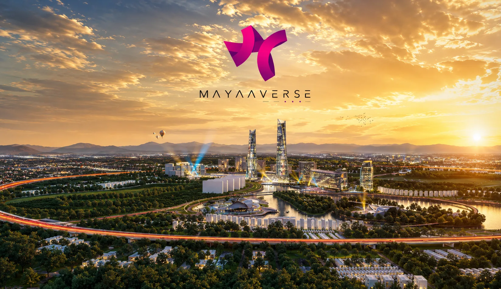
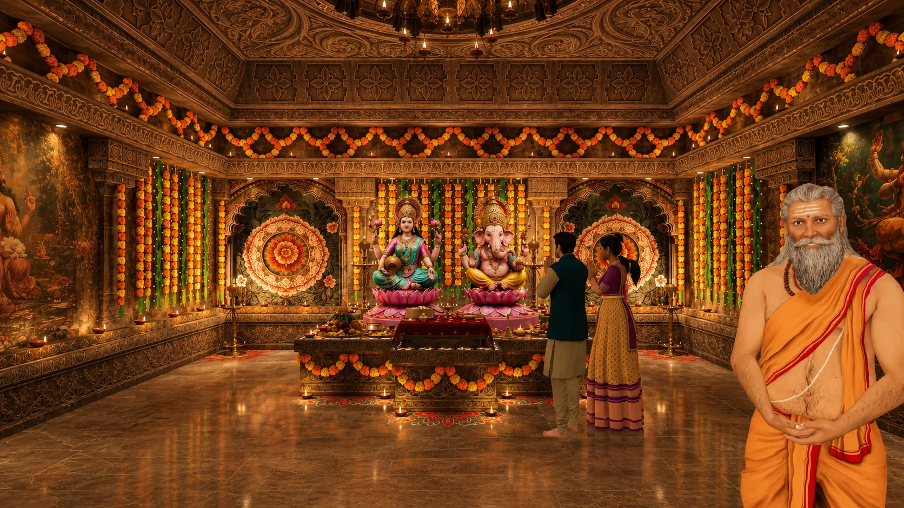
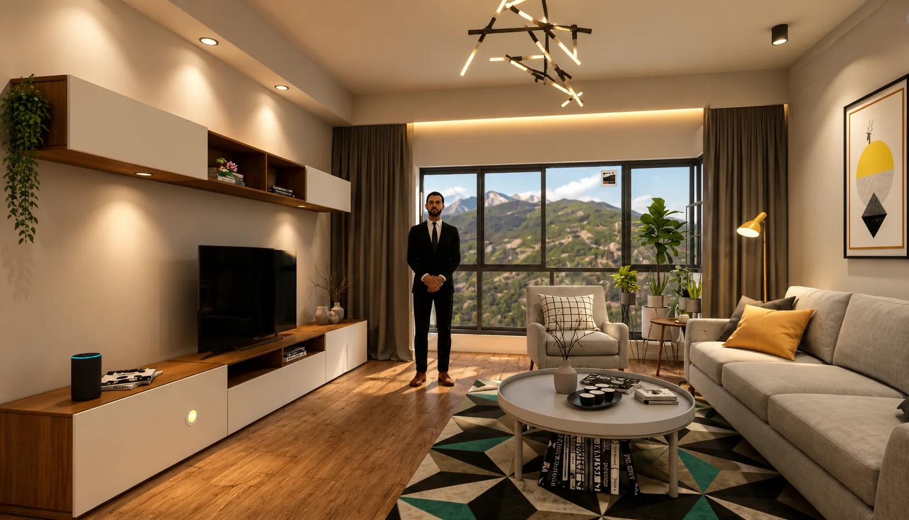

Mayaaverse
Temple · Meditation · AI Real Estate. A multi-module standalone VR world combining cultural exploration, guided mindfulness, and AI property navigation.
Cultural Sanctuary
Intricately detailed temple environment built with culturally accurate architecture, high-fidelity light bakes, and spatial audio chants or bells.
Guided Mindfulness
Tranquil pavilion and natural nature soundscapes with guided sessions, visual breath rings, and ambient haptic cycle reminders.
AI Property Hub
Futuristic platform featuring walkthrough 3D floor plans and a conversational AI assistant that understands context and material swaps.
Spiritual Grounding & Mindfulness
Mayaaverse is a technical showcase of high-presence virtual reality on Meta Quest 3 standalone hardware. The first two modules are designed for contemplation: a rich, culturally authentic Temple Simulation and an architecturally serene Meditation Center.
Users can walk freely through highly-detailed structures, trigger proximity-based Points of Interest, and complete guided meditation sessions synced with haptics and spatial low-frequency bowls (432 Hz) to shield hardware fan noise.


Futuristic AI Real Estate Hub
The third module blends wellness with modern utility, providing an interactive property exploration interface. Users browse walkthrough 3D floor plans, configure room materials, and communicate directly with a responsive AI Assistant NPC.
By shifting from standard chatbot patterns to a sentence-by-sentence streaming TTS architecture, the conversational response delay drops to under 2 seconds, preserving the social presence of the avatar.
- ✓ Streaming speech-to-text voice transcription
- ✓ Oculus SDK lip-sync driven dynamically
- ✓ In-world holographic spec and availability panels
Experience the Mayaaverse
A full technical walkthrough of the immersive temple environment and AI assistant integration.
Standalone Meta Store Quality
Building a multi-module experience inside a single binary required a strict sequential scene lifecycle protocol. The transition manager completely unloads assets and resets physics/mixers to prevent spikes.
| Platform Feature | Implementation Detail |
|---|---|
| SDK Integration | Meta XR SDK • Meta Building Blocks (raycast, locomotion) |
| Render Pipeline | Unity Universal Render Pipeline (URP) with FFF level 2 |
| Audio Mixing | Unity Audio Mixer snapshot crossfades (3-5 second transitions) |
| Texture Compression | ASTC 6x6 (environment), ASTC 4x4 (hero items) |
| AI Integration | NLP NLP streaming API + dynamic TTS + Oculus LipSync |
Let's Design Your Project
We engineer modular, production-ready interactive systems and robust game loops. Reach out to our engineering team to bring your vision to life.
Start Your ProjectExplore Other Projects


Mayaaverse
Multi-Module Standalone VR Architecture
A deep-dive into the engineering, architecture, and technical problem-solving behind a multi-module immersive VR experience published on the Meta Store for Quest 3, spanning cultural exploration, guided mindfulness, and AI-powered real estate interaction.
Unified Worlds, Diverse Purposes
Mayaaverse is a fully immersive, standalone VR experience developed for Meta Quest 3 and published on the Meta Store. Rather than a single-concept application, Mayaaverse combines three distinct immersive modules under one cohesive virtual world — a cultural temple environment, a guided meditation sanctuary, and a futuristic AI-powered real estate hub.
The experience is designed to serve users across the emotional spectrum: from calm, spiritually grounded exploration, to practical, technology-enhanced property browsing — all within a single, unified VR application. The product is available publicly on the Meta Store, targeting the growing Quest 3 user base.
Vision & Goal
The goal was to demonstrate that a single VR application could serve meaningfully different user needs — cultural connection, mental wellness, and modern utility — by designing each module with its own spatial identity and interaction language, while sharing a unified navigation and technical foundation.
| Specification Specification & Platform Detail | |
|---|---|
| Platform | Meta Quest 3 (Standalone) |
| Engine | Unity (URP) |
| SDKs | Meta XR SDK • Meta Building Blocks • AI Assistant |
| Distribution | Meta Store (publicly available) |
| Core Tech | Spatial Audio • AI NPC • Mixed Reality Passthrough |
Application Summary
| Aspect | Detail |
|---|---|
| Total Modules | 3 — Temple, Meditation Center, AI Real Estate Hub |
| Platform Requirement | Meta Quest 3 Standalone — no PC or phone required |
| Core Audience | Wellness seekers, culture enthusiasts, and property explorers |
| Input Mechanics | Meta Quest 3 Touch Controllers + Hand Tracking |
| Visual Style | High-fidelity URP — culturally detailed and futuristic aesthetics per module |
| AI Integration | Responsive AI assistant in Real Estate module for guided property tours |
Three Self-Contained Experiential Environments
Mayaaverse is structured around three self-contained yet architecturally unified modules. Each has its own environment design, interaction patterns, audio identity, and purpose — loaded from a shared central hub using Unity's scene management system.
Temple Simulation
Cultural Exploration & Spiritual SanctuaryMeditation Center
Guided Mindfulness & Mental ResetAI-Powered Real Estate Hub
Futuristic Property ExplorationModular Quest 3 Architecture
Mayaaverse uses a modular Unity architecture where each experience module is a separate scene, loaded additively or replaced from a persistent central hub scene. This approach allows each module to maintain its own asset budget, lighting setup, and interaction systems while sharing core managers.
High-Level Architecture
| Layer | Responsibility |
|---|---|
| Hardware / OS Layer | Meta Quest 3 runtime, Guardian boundary, 6DoF tracking, hand tracking, haptics |
| Meta XR SDK | OVR Camera Rig, controller/hand input processing, Passthrough API, scene understanding |
| Meta Building Blocks | Pre-built interaction components: ray interactors, grab, locomotion, UI canvas system |
| Unity Engine (URP) | Render pipeline, lighting, animation, physics matrix, spatial audio, scene loading |
| Module Scene System | Persistent Hub scene + 3 additive module scenes loaded asynchronously via TransitionController |
| AI Assistant System | Voice microphone input capture → NLP query handler → AI response API → TTS → 3D lip-sync |
| Custom Interaction Layer | PointOfInterestManager (Temple), MeditationSessionController (Mindfulness), PropertyShowcaseManager (Real Estate) |
| Audio Architecture | Unity Audio Mixer — per-module soundscapes, spatial 3D audio sources, ambient sound masking |
Scene & Module Management
A persistent HubManager scene runs throughout the application lifetime, managing navigation between modules, shared player state, and system-level UI. Individual module scenes are loaded asynchronously on demand, with a custom TransitionController handling loading states.
- HubManager: Persistent singleton that survives scene loads to hold player comfort settings and session metadata.
- SceneLoader: Asynchronously streams scene bundles with loading progress tracking, displaying themed loading backgrounds per module.
- TransitionController: Orchestrates full-screen fades, audio crossfades, and comfort vignettes on all module switches.
- Input Profiler: Reconfigures controller keybindings dynamically depending on the active module context.
- Mixer Snapshots: Smoothly crossfades the master Audio Mixer states rather than cutting audio abruptly during transitions.
Core Custom Systems
- PointOfInterestManager (Temple): Uses proximity triggers around the player to float world-space cultural information panels into view. Tracks POI completion stats for progress confirmation.
- MeditationSessionController (Meditation): Manages session selection, audio narration sequencing, breathing guide animations, haptic cues, and environmental light states via ScriptableObjects.
- AI Assistant Controller (Real Estate): Integrates Meta's Mic API to capture speech, handles backend NLP API calls, executes Text-to-Speech (TTS), and synchronises avatar blendshape lip animations.
- PropertyShowcaseManager (Real Estate): Coordinates teleport waypoints, holographic panel states, room material swap triggers, and data binding with the real estate property catalogue API.
Engineering Bottlenecks on Mobile SoCs
Building a single application spanning three architecturally and tonally distinct experiences — while maintaining high performance on standalone Quest 3 hardware — introduced a broad set of engineering and design challenges.
Asset Budget & Performance Across High-Fidelity Modules
Diverse Render Needs and Thermal Constraints
Running detailed cultural architecture, volumetric particle systems, and holographic user interfaces on a standalone mobile GPU without active asset streaming can quickly lead to thermal throttling and frame rate drops.
- Temple's intricate stone carvings generate high polygon counts and draw calls.
- Real Estate holographic UI panels use transparency, which is expensive on mobile tile-based GPUs.
- Meditation particle systems (mist, light rays) create severe fill-rate pressure.
- Quest 3's GPU handles more than Quest 2, but thermal throttling remains a risk for long sessions.
Per-Module Budgeting & URP Optimisation
We established strict draw call and triangle budgets per module prior to content authoring and implemented target rendering optimizations.
- Mesh LODs on all hero props and aggressive texture atlasing to reduce materials.
- Holographic panels use custom URP shaders with depth-write disabled to prevent overdraw.
- Meditation particles utilize GPU Instancing with maximum emitter counts capped in ScriptableObjects.
- FFR (Fixed Foveated Rendering) at level 2 and ASTC compression to optimize VRAM.
AI Assistant Integration in Real-Time VR
Immersion-Breaking Chat Latency
Integrating a conversational AI into a VR space introduced latency challenges. A user waiting several seconds for a response with a frozen avatar breaks the illusion of presence entirely.
- Voice capture, transcription, API round-trip, and TTS generation form a slow serial chain.
- AI backend response times can spike, causing a visible avatar freeze.
- Lip-sync animations must be computed from dynamic TTS audio buffers in real-time.
- The conversation history must persist without degrading response latency over time.
Streaming TTS & Real-time Lip-Sync
We structured the conversational pipeline around streaming chunks instead of a request-response pattern.
- The voice API streams partial speech transcripts to the backend during voice capture.
- AI backend streams responses sentence-by-sentence, starting TTS as soon as the first sentence is received.
- Oculus LipSync SDK parses live TTS audio to drive avatar blendshapes dynamically.
- Avatar enters a thinking idle loop immediately, reducing perceived delay to under 2 seconds.
Meditation UX: Comfort, Presence & Sensory Design
Jarring Interfaces and Sensory Interruptions
Meditation requires the technology to be invisible. Standard VR UI and locomotion patterns are actively harmful in a mindfulness context as they disrupt focus.
- Head-locked UI elements cause severe eye strain during stillness.
- Abrupt audio transitions between voice and ambient music cause cognitive interruptions.
- Quest 3 fan noise is audible in quiet rooms, breaking presence.
- Accidental controller button presses during meditation can ruin a session.
Zero-Intrusion Design and Masking soundscapes
We applied subtractive sensory design to minimize cognitive load throughout the meditation module.
- All UI panels are world-space anchored at comfortable focal lengths.
- Audio crossfades use Unity Audio Mixer snapshots with slow 3–5 second transitions.
- Continuous low-frequency ambient bowls (432 Hz) mask headset fan frequencies.
- Interactive controls require long-press actions to prevent accidental session exits.
Multi-Module Scene Architecture & Memory Management
Memory Spikes and Asset Leaks During Transitions
Asynchronously transitioning between visual styles requires immediate memory cleanups to prevent the garbage collector from triggering frame hitches inside the headset.
- Additive loading of heavy environments causes memory spikes if unloads overlap.
- Lighting bake data for all modules exceeds active standalone VRAM limits.
- Temple audio sources can bleed into the Meditation module if not cleanly terminated.
- Module-specific physics matrices and gravity settings must be dynamically reset.
Sequential Teardown & Lifecycle Managers
We implemented a strict lifecycle protocol ensuring complete teardown of the outgoing module before initializing the next.
- Teardown halts audio, unregisters inputs, unloads assets, and forces garbage collection.
- Audio Mixer snapshots reset to Neutral during the black frame of transitions.
- HubManager tracks spawn transforms to prevent geometry overlap bugs.
- The user is held in a comfortable themed loading scene during asynchronous stream times.
Deep Engineering Implementations
1. URP Optimization Pipeline
To run the high-fidelity temple assets, volumetric meditation light rays, and complex real estate floor plans on Quest 3, we implemented an architecture-first asset budgeting framework.
All static assets in the Temple simulation utilize baked lighting with zero real-time shadow calculations. environmental textures utilize ASTC 6x6 compression while hero props use ASTC 4x4, keeping texture memory under strict limits. Foveated rendering is forced at level 2 to reduce pixel shader execution on the margins of the lenses.
2. Low-Latency streaming NLP
Standard request-response API patterns lead to awkward silence in virtual reality. To bridge the latency gap, our custom AI assistant controller processes voice input as a dynamic stream.
The system captures audio, streams transcription fragments, and sends queries to the NLP API. The API streams responses back sentence-by-sentence. The first sentence is pushed to the Text-To-Speech generator immediately. An avatar animation manager runs dynamic lipsync based on the audio output, maintaining natural social presence under a 2-second delay.
3. Meditation Comfort Architecture
The meditation pavilion is built on subtractive UI principles. We removed all head-locked displays, anchoring the UI guide rings in world coordinates outside the direct gaze vector.
Audio streams crossfade using mixer snapshots to prevent jarring volume jumps. Headset fan hum is masked by a low-frequency ambient layer tuned to 432 Hz. System haptic pulses are dispatched during breathing cycles, allowing users to keep their eyes closed while maintaining mindfulness cues.
4. Sequential Teardown System
A SceneLifecycleManager controls scene unloads sequentially, ensuring that unloads are fully finished and garbage collection is executed before streaming the next asset bundles.
During scene transitions, the client fades to black, cuts physics variables, and unloads asset bundles. An audio snapshot resets the mixer parameters to default levels, blocking any temple sound leakages. The player is placed in a themed loading zone before spawning in the new module space.
System State Machines & Flows
Module Navigation Hub State Machine
| State | Description |
|---|---|
| LANDING | User arrives in the central hub — neutral, calm environment with three portal gateways representing each module. |
| BROWSING | User approaches a portal — contextual preview (thumbnail, description, ambient sound preview) activates via proximity trigger. |
| CONFIRMING | User selects a module — confirmation UI appears to allow intent confirmation before the full scene load. |
| TRANSITIONING | Fade out → scene lifecycle teardown → new module load → fade in to module entry point. |
| IN_MODULE | User is inside a module. Hub persists in background. Session data and return navigation always available. |
| RETURNING | User triggers module exit → transition back to hub landing, preserving prior hub state. |
Temple Points of Interest (POI) System
| State | Behaviour |
|---|---|
| DORMANT | POI is in scene but player is outside proximity radius. No UI visible. |
| ACTIVATING | Player enters proximity trigger. Subtle particle highlight appears on POI object. No intrusive UI yet. |
| ACTIVE | Player gazes at highlighted POI or approaches within close range. Information panel floats up from object in world space. |
| READING | Player is engaged with panel. Ambient audio for this specific POI plays spatially. Panel persists until player moves away. |
| VISITED | POI logged as visited in session data. Subtle visual change on POI marker indicates it has been explored. |
Real Estate AI Interaction Flow
- Activation: User presses controller button or raises hand near AI avatar — avatar turns, greets user, session begins.
- Voice Capture: Meta Microphone API opens — listening indicator shows spatially above avatar head.
- Transcription: Partial transcripts streamed in real-time → query finalised on silence detection.
- AI Processing: Query + conversation history sent to AI API — avatar enters 'thinking' idle animation.
- Streaming Response: First sentence received → TTS generation begins immediately → avatar begins speaking.
- Lip Sync & Audio: Oculus LipSync processes TTS audio buffer → drives avatar blendshapes in real-time.
- Property Actions: If response includes a property command (show room, swap material), PropertyShowcaseManager executes it.
- Follow-Up: Conversation history retained — user can ask contextual follow-up without re-stating context.
Validation, Store Submission, and Key Takeaways
Multi-Module Apps Need Architecture-First Planning
The temptation in a multi-experience VR app is to build each module independently and connect them later. This creates compounding technical debt. Defining the shared hub architecture, scene lifecycle protocol, and asset budgeting framework before any module content is authored saved significant rework — particularly for memory management and audio state between modules.
AI in Real-Time VR Demands Streaming, Not Request-Response
Standard AI chatbot patterns — send query, wait for full response, display text — are incompatible with VR social presence expectations. Streaming the response sentence-by-sentence and beginning TTS and lip-sync on the first sentence is the correct architecture. The perceived latency drops from 4–6 seconds to under 2 seconds with no change to the underlying AI model.
Meditation UX is an Anti-Pattern to Standard VR Design
Most VR best practices — clear UI indicators, responsive control feedback, visible progress markers — are counterproductive in a meditation context. The design discipline required is subtractive: remove every element that draws conscious attention. Long-press inputs, world-anchored panels, slow audio transitions, and haptic-only cues are the correct toolkit for contemplative VR experiences.
Quest 3 Headroom is Real — Use It, But Respect Its Limits
Quest 3's GPU and CPU improvements over Quest 2 are substantial, but thermal throttling remains a real constraint on long sessions. An application that runs at 72 fps in a 5-minute demo may thermal-throttle to lower clocks in a 30-minute meditation session. Profiling across a full session duration — not just at launch — is essential for wellness-category VR applications.
Spatial Audio is the Fastest Path to Presence
Across all three modules, spatial audio consistently produced the highest 'sense of presence' scores in user testing relative to its implementation cost. Accurate 3D placement of temple bells, water features, meditation bowls, and ambient city soundscapes in the Real Estate hub significantly outperformed visual fidelity improvements in user perception. Audio should be budgeted and implemented early, not treated as post-production polish.
Cultural Design Requires Cultural Research
The Temple module's authenticity — and user reception — depended on visual and spatial references grounded in real architectural and iconographic traditions. Generic 'fantasy temple' aesthetics were rejected early in design. The investment in culturally accurate asset design and spatial organisation resulted in the Temple module receiving the strongest user emotional response of the three experiences.
Publishing on the Meta Store Changes the Quality Bar
Targeting Meta Store publication raises the minimum quality threshold significantly versus an internal or enterprise deployment. Meta's review process evaluates comfort, performance consistency, controller mapping correctness, and safety compliance. Building with store submission in mind from the project's outset — not as a final step — eliminated a class of late-stage platform compliance issues.
Ready to Build at This Level?
DualCore specializes in high-presence standalone VR and XR simulation systems. If your project demands technical excellence in immersion—let's talk.